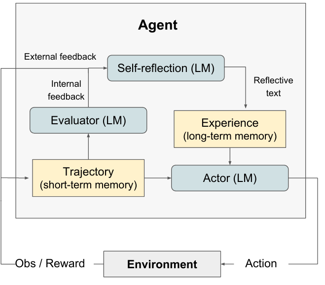
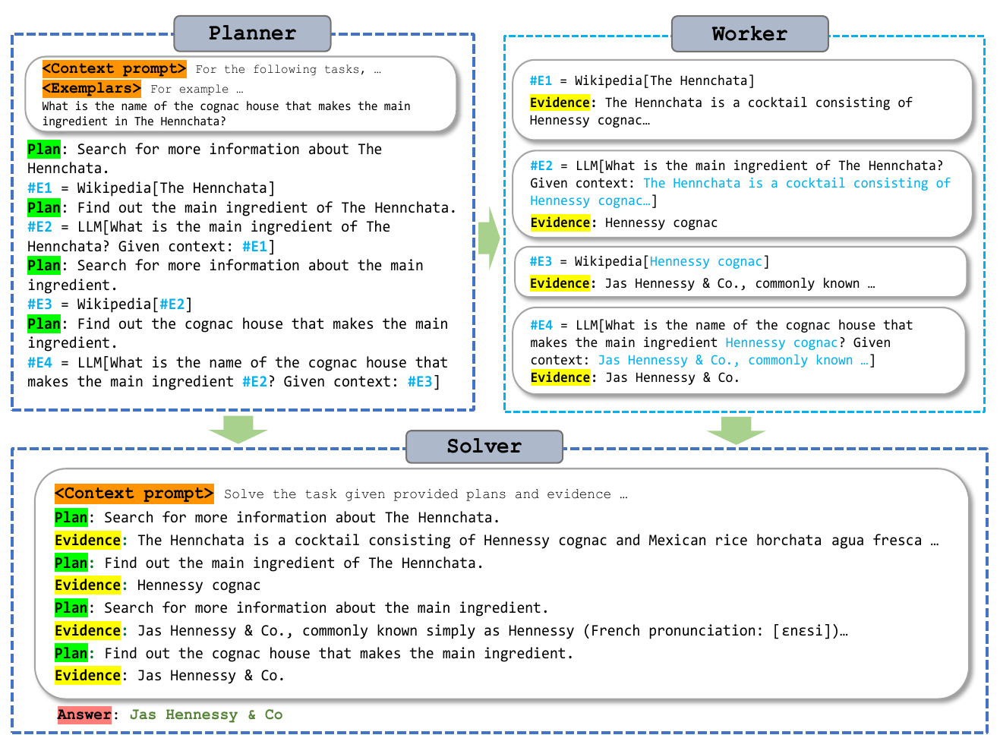
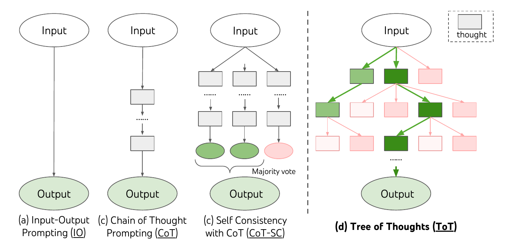
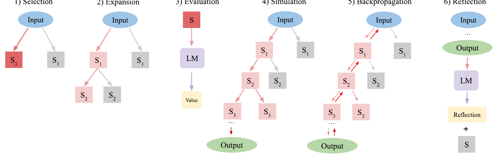
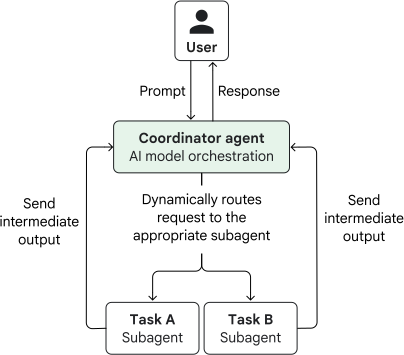
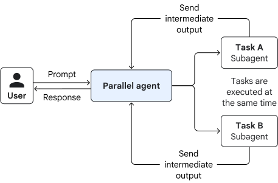
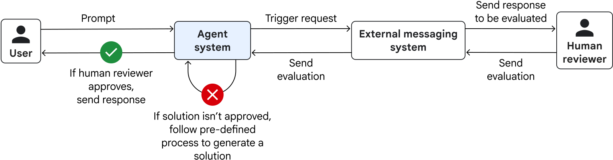

Start with the layer that needs a loop
An agent loop is a repeated decision followed by new information. The names often describe different layers, so they can coexist. A coding agent might use ReAct to inspect files inside one run, Reflexion after a failed test, and a Ralph-style harness to start the next run from committed work. None of these alone defines permission to deploy.
OODA is a useful analogy for observe–orient–decide–act, not a distinct LLM algorithm. Tool calling is the mechanism for an action; ReAct is one policy for deciding when to call a tool. Routing, supervisor–worker orchestration, and human approval control who acts and which effects are permitted.
Act on observations: ReAct and tool calling
In ReAct, the model alternates between a next step, an action, and an observation. For a broken checkout test, it searches the repository, reads the relevant function, runs the test, then decides what to inspect next. A tool API supplies the executable call and returns the result; it does not itself guarantee a good decision or safe authority.

Use it when the environment can reveal the next useful step. Set limits on tool calls, runtime and side effects. A mistaken observation can propagate, so a test result or retrieved page is evidence to inspect, not an instruction to obey.
Improve a trial: Self-Refine, Reflexion and CRITIC
Self-Refine generates a draft, asks the model for feedback, and revises it; the same model can play all three roles. Reflexion uses feedback from a completed trial to write a short verbal lesson for a later trial, without updating model weights. CRITIC adds tools to the critique step, such as a search result, interpreter, or other external check. Anthropic’s evaluator–optimizer is the broader workflow shape: generate, evaluate, revise.


For code, an external failing test and its diff give stronger feedback than “critique your answer.” Preserve the concrete failure and the next hypothesis. Stop when the acceptance tests pass, the budget is spent, or consecutive revisions stop improving. A self-critique can repeat the original mistake; research on self-correction cautions against treating model confidence as independent verification.
Plan before acting: plan–execute–verify and ReWOO
A practical plan–execute–verify harness writes a short task list, performs the next action, checks the result, then revises the plan if evidence changes. It is an engineering pattern, not the same thing as the named Plan-and-Solve prompting paper. ReWOO makes a more specific separation: a Planner drafts tool-dependent steps, Workers collect evidence, and a Solver synthesizes the answer. Dependencies between steps still matter; the paper does not imply that every tool call can run in parallel.


Use it when the information-gathering steps are fairly predictable. If the first observation changes the problem, replan rather than execute a stale blueprint to completion.
Explore alternatives: best-of-N, Tree of Thoughts and LATS
Best-of-N samples several complete candidates and ranks them. It is a selection pass, not necessarily a loop; it works only as well as its judge. Tree of Thoughts branches at intermediate reasoning states and evaluates which partial path to continue. Language Agent Tree Search (LATS) combines tree search, environment feedback and reflection while an agent acts. These add cost and benefit only when alternative paths and a useful feedback signal exist.




Example: for a migration plan, generate three strategies, test each against schema constraints and recovery requirements, then continue the most promising one. If a cheap deterministic check already rejects a candidate, do not spend more model calls debating it. A judge can be gamed or miscalibrated; final acceptance should come from the real task outcome.
Continue long work: Ralph, checkpoints and watchdogs
Geoffrey Huntley’s Ralph is an outer loop: a fresh agent run takes the next small item, changes files, and leaves its state in the repository for the next run. Anthropic’s long-running harness similarly uses progress notes and Git history to bridge fresh contexts. The Claude Ralph plugin uses a stop hook and can resume with the same prompt, so “Ralph” does not always mean the process gets a new context window on every iteration.
Compaction summarizes or removes prior conversation while keeping selected state; OpenAI and Anthropic document different implementations. A fresh run reconstructs context from durable artifacts. Neither makes a vague memory trustworthy: write a checkpoint with the goal, files changed, test results, unresolved failures and the next action. Re-read the source files when a checkpoint claim matters.
A “sweeper” that picks up unfinished tasks and a “watchdog” that stops stalled work are useful harness controls, but they are descriptive names rather than canonical research algorithms. Set explicit maximum attempts, budgets, heartbeat timeouts and an escalation owner. A context-fill percentage such as 70% is a local tuning choice, not a universal threshold.
Coordinate subagents without losing ownership
Routing chooses one specialist for a known class of request. A coordinator–worker pattern lets a lead agent split a changing task, delegate bounded work and combine the results. Agents as tools return a result to that lead; a handoff transfers control to another agent. The distinction matters because someone must own the final answer, conflict resolution and approval request.


Run subagents concurrently when their work is genuinely independent: one can inspect retrieval quality while another checks deployment controls. This is task-level concurrency, sometimes loosely called “multithreading”; it does not imply one model call has several CPU threads. At the join point, compare evidence, resolve disagreements and check that no worker acted beyond its scoped tools. Parallel writes to the same files or shared state need explicit ownership or isolation. Anthropic’s research system uses a lead agent and parallel specialist searches; Google ADK’s ParallelAgent documents concurrent child execution.


Multi-agent debate asks agents to challenge an answer. It is a feedback arrangement, not a truth test: agents can share the same blind spot or converge on a persuasive mistake. Start with a single agent and add specialists only when independent work or expertise measurably improves the result after accounting for extra calls, latency and integration work.
Human-in-the-loop is an approval boundary. The model can draft a refund, migration or deployment, but the external system must pause and obtain the required person’s decision before the side effect. See where autonomy stops for scoped authority and audit receipts.


Choose the smallest loop that fixes the failure
Read the original work
The figures above are credited to their original papers or publisher. The list below gives the source for each named pattern and its practical boundary.
- ReActReasoning and acting with observations; the action-loop foundation.
- Self-Refine, Reflexion and CRITICThree distinct ways to produce, remember or externally check revision feedback.
- Plan-and-Solve and ReWOONamed plan-first methods; compare their actual planner and observation assumptions.
- Tree of Thoughts and LATSIntermediate-state search and search that includes acting and environmental feedback.
- The original Ralph loop, long-running harnesses and the Claude plugin variantOuter-run persistence; implementations differ in how they manage context.
- Building effective agents, multi-agent research system, OpenAI orchestration and Google Cloud design patternsRouting, coordinator–worker ownership, parallel child execution, handoffs and human review.
- Multi-agent debate and self-correction surveyRead for both the mechanism and limits of model-generated critique.